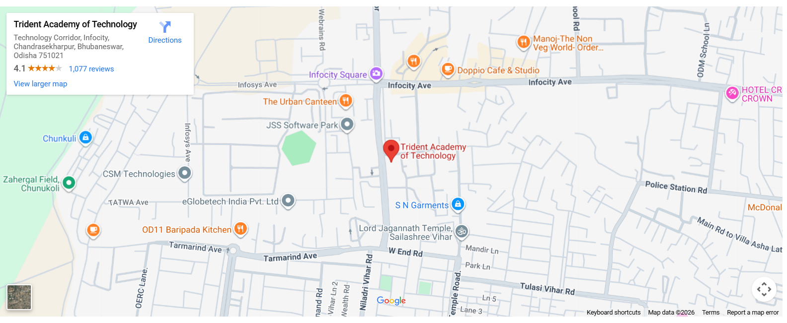

To ensure that the grievances are resolved promptly, impartially and with utmost confidentiality.
TAT has a sound and effective Grievance Redressal System in place to deal with the day to day grievance of different stake holders from their specific perspective and redress the grievance in time. TAT has framed three Grievance Redressal Forums with an aim to provide easy and readily accessible machinery for the prompt disposal of the day-to-day genuine grievances of the aggrieved community and prevail a sound and congenial academic atmosphere in the institution. On the basis of a written complaint, the Grievance Redressal Forum expedites prompt action to redress the grievances by sorting out the problems punctually and judiciously.

Get in touch
Trident Academy of Technology, F2/A, Chandaka Industrial Estate, In front of Infocity,Bhubaneswar Odisha, Pin:- 751024 India.email:- info@trident.ac.in Phone:- +91 98611 91195 Admission Contact:- +91 98611 91195, +91 70084 43255 http://trident.ac.in
Learning, leadership, and lifelong friendships.
Trident provides a vibrant campus environment with cultural festivals, technical events, sports activities, student clubs, and social outreach programs that support holistic student development.


Preparing students for professional success.
Through structured training programs, industry interaction, internships, and placement preparation, students are guided towards successful careers in engineering, technology, and management domains.